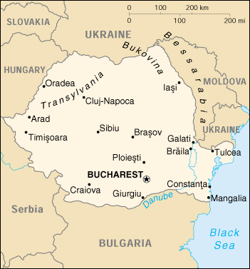

{kind=link}


| Romania |
|
|  | |
| Introduction |
Background: Soviet occupation following World War II led to the formation of a communist Peoples Republic in 1947 and the abdication of the king. The decades-long rule of President Nicolae CEAUSESCU became increasingly draconian through the 1980s. He was overthrown and executed in late 1989. Former communists dominated the government until 1996 when they were swept from power. Much economic restructuring remains to be carried out before Romania can achieve its hope of joining the EU.
| Geography |
Location: Southeastern Europe, bordering the Black Sea, between Bulgaria and Ukraine
Geographic coordinates: 46 00 N, 25 00 E
Map references: Europe
Area:
total:
237,500 sq km
land:
230,340 sq km
water:
7,160 sq km
Area - comparative: slightly smaller than Oregon
Land boundaries:
total:
2,508 km
border countries:
Bulgaria 608 km, Hungary 443 km, Moldova 450 km, Serbia and Montenegro 476 km (all with Serbia), Ukraine (north) 362 km, Ukraine (east) 169 km
Coastline: 225 km
Maritime claims:
contiguous zone:
24 nm
continental shelf:
200-m depth or to the depth of exploitation
exclusive economic zone:
200 nm
territorial sea:
12 nm
Climate: temperate; cold, cloudy winters with frequent snow and fog; sunny summers with frequent showers and thunderstorms
Terrain: central Transylvanian Basin is separated from the Plain of Moldavia on the east by the Carpathian Mountains and separated from the Walachian Plain on the south by the Transylvanian Alps
Elevation extremes:
lowest point:
Black Sea 0 m
highest point:
Moldoveanu 2,544 m
Natural resources: petroleum (reserves declining), timber, natural gas, coal, iron ore, salt, arable land, hydro power
Land use:
arable land:
41%
permanent crops:
3%
permanent pastures:
21%
forests and woodland:
29%
other:
6% (1993 est.)
Irrigated land: 31,020 sq km (1993 est.)
Natural hazards: earthquakes most severe in south and southwest; geologic structure and climate promote landslides
Environment - current issues: soil erosion and degradation; water pollution; air pollution in south from industrial effluents; contamination of Danube delta wetlands
Environment - international agreements:
party to:
Air Pollution, Antarctic Treaty, Biodiversity, Climate Change, Desertification, Endangered Species, Environmental Modification, Hazardous Wastes, Law of the Sea, Nuclear Test Ban, Ozone Layer Protection, Ship Pollution, Wetlands
signed, but not ratified:
Air Pollution-Persistent Organic Pollutants, Antarctic-Environmental Protocol, Climate Change-Kyoto Protocol
Geography - note: controls most easily traversable land route between the Balkans, Moldova, and Ukraine
| People |
Population: 22,411,121 (July 2000 est.)
Age structure:
0-14 years:
18% (male 2,111,320; female 2,015,347)
15-64 years:
68% (male 7,597,958; female 7,707,498)
65 years and over:
14% (male 1,237,368; female 1,741,630) (2000 est.)
Population growth rate: -0.21% (2000 est.)
Birth rate: 10.76 births/1,000 population (2000 est.)
Death rate: 12.29 deaths/1,000 population (2000 est.)
Net migration rate: -0.6 migrant(s)/1,000 population (2000 est.)
Sex ratio:
at birth:
1.05 male(s)/female
under 15 years:
1.05 male(s)/female
15-64 years:
0.99 male(s)/female
65 years and over:
0.71 male(s)/female
total population:
0.95 male(s)/female (2000 est.)
Infant mortality rate: 19.84 deaths/1,000 live births (2000 est.)
Life expectancy at birth:
total population:
69.93 years
male:
66.1 years
female:
73.99 years (2000 est.)
Total fertility rate: 1.35 children born/woman (2000 est.)
Nationality:
noun:
Romanian(s)
adjective:
Romanian
Ethnic groups: Romanian 89.5%, Hungarian 7.1%, Roma 1.8%, German 0.5%, Ukrainian 0.3%, other 0.8% (1992)
Religions: Romanian Orthodox 70%, Roman Catholic 6% (of which 3% are Uniate), Protestant 6%, unaffiliated 18%
Languages: Romanian, Hungarian, German
Literacy:
definition:
age 15 and over can read and write
total population:
97%
male:
98%
female:
95% (1992 est.)
| Government |
Country name:
conventional long form:
none
conventional short form:
Romania
local long form:
none
local short form:
Romania
Data code: RO
Government type: republic
Capital: Bucharest
Administrative divisions: 40 counties (judete, singular - judet) and 1 municipality* (municipiu); Alba, Arad, Arges, Bacau, Bihor, Bistrita-Nasaud, Botosani, Braila, Brasov, Bucuresti*, Buzau, Calarasi, Caras-Severin, Cluj, Constanta, Covasna, Dimbovita, Dolj, Galati, Gorj, Giurgiu, Harghita, Hunedoara, Ialomita, Iasi, Maramures, Mehedinti, Mures, Neamt, Olt, Prahova, Salaj, Satu Mare, Sibiu, Suceava, Teleorman, Timis, Tulcea, Vaslui, Vilcea, Vrancea
Independence: 1881 (from Turkey; republic proclaimed 30 December 1947)
National holiday: National Day of Romania, 1 December (1990)
Constitution: 8 December 1991
Legal system: former mixture of civil law system and communist legal theory; is now based on the constitution of France's Fifth Republic
Suffrage: 18 years of age; universal
Executive branch:
chief of state:
President Emil CONSTANTINESCU (since 29 November 1996)
head of government:
Prime Minister Mugur ISARESCU (since 22 December 1998)
cabinet:
Council of Ministers appointed by the prime minister
elections:
president elected by popular vote for a four-year term; election last held 3 November 1996, with runoff between the top two candidates held 17 November 1996 (next to be held NA November/December 2000); prime minister appointed by the president
election results:
percent of vote - Emil CONSTANTINESCU 54.4%, Ion ILIESCU 45.6%
Legislative branch:
bicameral Parliament or Parlament consists of the Senate or Senat (143 seats; members are elected by direct popular vote on a proportional representation basis to serve four-year terms) and the Chamber of Deputies or Adunarea Deputatilor (343 seats; members are elected by direct popular vote on a proportional representation basis to serve four-year terms)
elections:
Senate - last held 3 November 1996 (next to be held fall 2000); Chamber of Deputies - last held 3 November 1996 (next to be held fall 2000)
election results:
Senate - percent of vote by party - CDR 30.7%, PDSR 23.1%, USD 13.2%, UDMR 6.8%, PRM 4.5%, PUNR 4.2%, others 17.5%; seats by party - CDR 53, PDSR 41, USD 23, UDMR 11, PRM 8, PUNR 7; Chamber of Deputies - percent of vote by party - CDR 30.2%, PDSR 21.5%, USD 12.9%, UDMR 6.6% PRM 4.5%, PUNR 4.4%, others 19.9%; seats by party - CDR 122, PDSR 91, USD 53, UDMR 25, PRM 19, PUNR 18, ethnic minorities 15
Judicial branch: Supreme Court of Justice, judges are appointed by the president on the recommendation of the Superior Council of Magistrates
Political parties and leaders:
Agrarian Democratic Party of Romania or PDAR [Mihai BERCA]; Alliance Party for Romania or APR [Tedor MELESCANU]; Civic Alliance Party or PAC [Nicolae MANOLESCU, chairman]; Democratic Party or PD [Petre ROMAN]; Democratic Union of Hungarians in Romania or UDMR [Bela MARKO]; Liberal Party '93 or PL-93 [Dinu PATRICIU]; National Liberal Party or PNL [Mircea IONESCU-QUINTUS]; National Liberal Party-Democratic Convention or PNL-CD [Nicolae CERVENI]; National Peasants' Christian and Democratic Party or PNTCD [Ion DIACONESCU]; Party of Social Democracy in Romania or PDSR [Ion ILIESCU]; Romania Mare Party (Greater Romanian Party) or PRM [Corneliu Vadim TUDOR]; Romanian National Unity Party or PUNR [Valeriu TABARA]; Romanian Social Democratic Party or PSDR [Alexamdru ATHANASIU]; Socialist Labor Party or PSM [Ilie VERDET]; Socialist Party or PS [Tudor MOHORA]; The Democratic Convention or CDR [Ion DIACONESCU]
note:
to increase their voting strength several of the above-mentioned parties united under umbrella organizations: PNTCD, PNL, and PNL-CD form the bulk of the Democratic Convention or CDR [Ion DIACONESCU]; PD and PSDR form the Union of Social Democrats or USD [Petre ROMAN]; and PAC and PL-93 form the National Liberal Alliance or ANL [Nicolae MANOLESCU]; PSM, PS, ANL, and numerous other small parties failed to gain representation in the most recent election
Political pressure groups and leaders: various human rights and professional associations
International organization participation: ACCT, BIS, BSEC, CCC, CE, CEI, EAPC, EBRD, ECE, EU (applicant), FAO, G- 9, G-77, IAEA, IBRD, ICAO, ICFTU, ICRM, IFAD, IFC, IFRCS, ILO, IMF, IMO, Inmarsat, Intelsat, Interpol, IOC, IOM, ISO, ITU, LAIA (observer), MONUC, NAM (guest), NSG, OAS (observer), OPCW, OSCE, PCA, PFP, UN, UNCTAD, UNESCO, UNIDO, UNIKOM, UNMIBH, UNMIK, UPU, WCL, WEU (associate partner), WFTU, WHO, WIPO, WMO, WToO, WTrO, ZC
Diplomatic representation in the US:
chief of mission:
Ambassador Mircea Dan GEOANA
chancery:
1607 23rd Street NW, Washington, DC 20008
telephone:
[1] (202) 332-4846, 4848, 4851
FAX:
[1] (202) 232-4748
consulate(s) general:
Los Angeles and New York
Diplomatic representation from the US:
chief of mission:
Ambassador James C. ROSAPEPE
embassy:
Strada Tudor Arghezi 7-9, Bucharest
mailing address:
American Embassy Bucharest, Department of State, Washington, DC 20521-5260 (pouch)
telephone:
[40] (1) 210 01 49, 210 40 42
FAX:
[40] (1) 210 03 95
branch office:
Cluj-Napoca
Flag description: three equal vertical bands of blue (hoist side), yellow, and red; the national coat of arms that used to be centered in the yellow band has been removed; now similar to the flag of Chad, also resembles the flags of Andorra and Moldova
| Economy |
Economy - overview: After the collapse of the Soviet Bloc in 1989-91, Romania was left with an obsolete industrial base and a pattern of industrial capacity wholly unsuited to its needs. In February 1997, Romania embarked on a comprehensive macroeconomic stabilization and structural reform program, but reform subsequently has been a frustrating stop-and-go process. Restructuring programs include liquidating large energy-intensive industries and major agricultural and financial sector reforms. In 1999 Romania's economy contracted for a third straight year - by an estimated 4.8%. Romania reached an agreement with the IMF in August for a $547 million loan, but release of the second tranche was postponed in October because of unresolved private sector lending requirements and differences over budgetary spending. Bucharest avoided defaulting on mid-year lump-sum debt payments, but had to significantly draw down reserves to do so; reserves rebounded to an estimated $1.5 billion by yearend 1999. The government's priorities include: obtaining renewed IMF lending, tightening fiscal policy, accelerating privatization, and restructuring unprofitable firms. Romania was invited by the EU in December 1999 to begin accession negotiations.
GDP: purchasing power parity - $87.4 billion (1999 est.)
GDP - real growth rate: -4.8% (1999 est.)
GDP - per capita: purchasing power parity - $3,900 (1999 est.)
GDP - composition by sector:
agriculture:
23%
industry:
51%
services:
26% (1997)
Population below poverty line: 21.5% (1994 est.)
Household income or consumption by percentage share:
lowest 10%:
3.8%
highest 10%:
20.2% (1992)
Inflation rate (consumer prices): 44% (1999 est.)
Labor force: 9.6 million (1998 est.)
Labor force - by occupation: agriculture 36.5%, industry 34.4%, services 29.1% (1994)
Unemployment rate: 11% (1999 est.)
Budget:
revenues:
$11.2 billion
expenditures:
$12.7 billion, including capital expenditures of $NA (1999 est.)
Industries: mining, timber, construction materials, metallurgy, chemicals, machine building, food processing, petroleum production and refining
Industrial production growth rate: -8.7% (1999 est.)
Electricity - production: 52.495 billion kWh (1998)
Electricity - production by source:
fossil fuel:
59%
hydro:
31.67%
nuclear:
9.33%
other:
0% (1998)
Electricity - consumption: 49.552 billion kWh (1998)
Electricity - exports: 537 million kWh (1998)
Electricity - imports: 1.269 billion kWh (1998)
Agriculture - products: wheat, corn, sugar beets, sunflower seed, potatoes, grapes; milk, eggs, beef
Exports: $8.4 billion (f.o.b., 1999 est.)
Exports - commodities: textiles and footwear 33.4%, metals and metal products 19.1%, machinery and equipment 9.5%, minerals and fuels 6.1% (1998)
Exports - partners: Italy 22%, Germany 19.6%, France 5.9%, US 3.8% (1998)
Imports: $9.6 billion (f.o.b., 1999 est.)
Imports - commodities: machinery and equipment 23%, fuels and minerals 14.2%, chemicals 8.7%, textiles and footwear 17.1% (1998)
Imports - partners: Germany 17.5%, Italy 17.4%, France 6.9%, US 4.2% (1998)
Debt - external: $9 billion (1999 est.)
Economic aid - recipient: $510.1 million (1995)
Currency: 1 leu (L) = 100 bani
Exchange rates: lei (L) per US$1 - 17,996.4 (December 1999), 15,332.8 (1999), 8,875.6 (1998), 7,167.9 (1997), 3,084.2 (1996), 2,033.3 (1995)
Fiscal year: calendar year
| Communications |
Telephones - main lines in use: 3.84 million (1999)
Telephones - mobile cellular: 52,000 (1999)
Telephone system:
domestic:
poor service; 90% of telephone network is automatic; trunk network is mostly microwave radio relay, with some fiber-optic cable; about one-third of exchange capacity is digital; roughly 3,300 villages have no service
international:
satellite earth station - 1 Intelsat; new digital international direct-dial exchanges operate in Bucharest; note - Romania is an active participant in several international telecommunication network projects (1999)
Radio broadcast stations: AM 40, FM 202, shortwave 3 (1998)
Radios: 7.2 million (1997)
Television broadcast stations: 130 (plus about 400 low-power repeaters) (1997)
Televisions: 5.25 million (1997)
Internet Service Providers (ISPs): 30 (1999)
| Transportation |
Railways:
total:
11,385 km (3,888 km electrified)
standard gauge:
10,898 km
narrow gauge:
487 km (1996)
Highways:
total:
153,359 km
paved:
103,671 km (including 133 km of expressways)
unpaved:
49,688 km (1998 est.)
Waterways: 1,724 km (1984)
Pipelines: crude oil 2,800 km; petroleum products 1,429 km; natural gas 6,400 km (1992)
Ports and harbors: Braila, Constanta, Galati, Mangalia, Sulina, Tulcea
Merchant marine:
total:
142 ships (1,000 GRT or over) totaling 1,154,127 GRT/1,612,314 DWT
ships by type:
bulk 15, cargo 110, container 1, passenger 1, passenger/cargo 1, petroleum tanker 5, rail car carrier 2, roll-on/roll-off 6, specialized tanker 1 (1999 est.)
Airports: 62 (1999 est.)
Airports - with paved runways:
total:
25
over 3,047 m:
4
2,438 to 3,047 m:
9
1,524 to 2,437 m:
12 (1999 est.)
Airports - with unpaved runways:
total:
37
1,524 to 2,437 m:
2
914 to 1,523 m:
12
under 914 m:
23 (1999 est.)
Heliports: 1 (1999 est.)
| Military |
Military branches: Army, Navy, Air and Air Defense Forces, Paramilitary Forces, Civil Defense
Military manpower - military age: 20 years of age
Military manpower - availability:
males age 15-49:
5,899,912 (2000 est.)
Military manpower - fit for military service:
males age 15-49:
4,960,011 (2000 est.)
Military manpower - reaching military age annually:
males:
190,083 (2000 est.)
Military expenditures - dollar figure: $650 million (FY96)
Military expenditures - percent of GDP: 2.5% (FY96)
| Transnational Issues |
Disputes - international: dispute with Ukraine over continental shelf of the Black Sea under which significant gas and oil deposits may exist; agreed in 1997 to two-year negotiating period, after which either party can refer dispute to the ICJ
Illicit drugs: important transshipment point for Southwest Asian heroin transiting the Balkan route and small amounts of Latin American cocaine bound for Western Europe